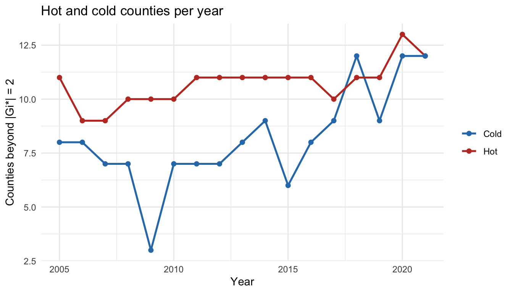
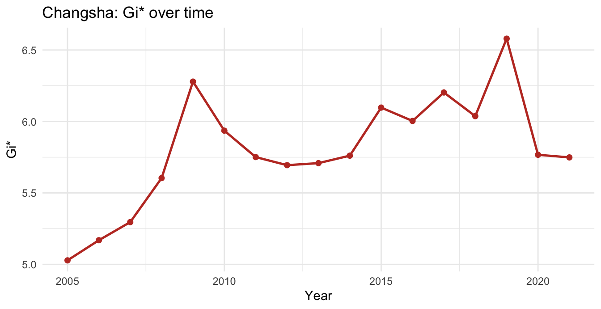
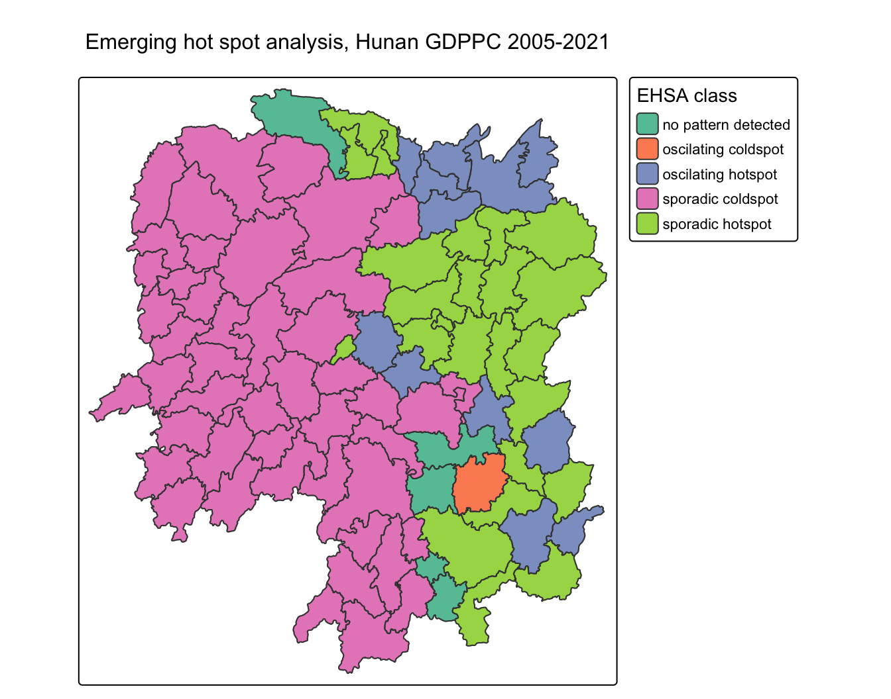
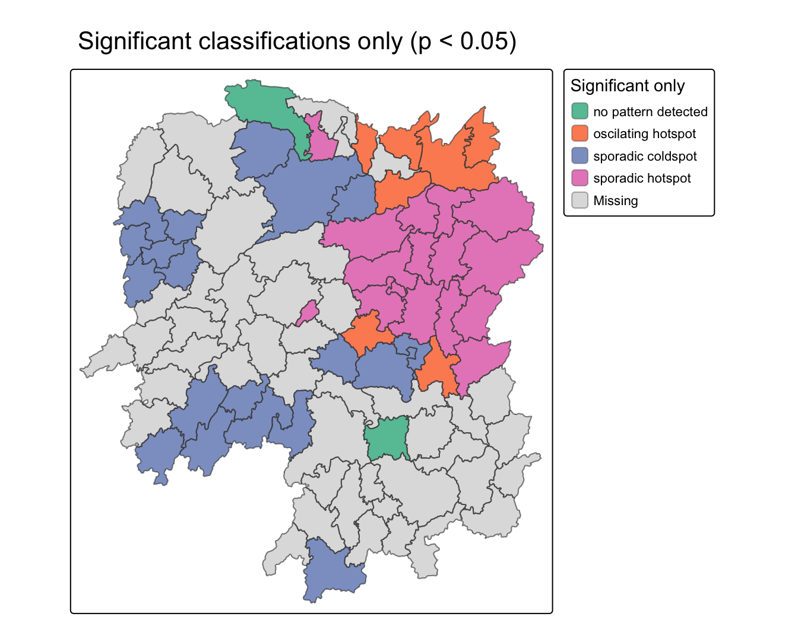

pacman::p_load(sf, sfdep, tmap, plotly, tidyverse, Kendall, knitr)
set.seed(1234)Emerging Hot Spot Analysis
HANDS-ON EXERCISE 6
R sfdep Space-time cube Gi* Mann-Kendall EHSA
This exercise follows Emerging Hot Spot Analysis, the first reading in the Geospatial Multivariate Data Analysis block.
1. Overview
Exercise 5 found a hot spot around Changsha in 2012. It could not say whether that hot spot was new, fading, or permanent, because it only ever saw one year.
Emerging Hot Spot Analysis adds the time axis. It computes Gi* for every location in every time period, then runs a Mann-Kendall trend test on each location’s sequence of Gi* values, and classifies the result into categories such as persistent, intensifying, diminishing, sporadic and oscillating.
The question this answers is the one a planner actually cares about: not “where is it hot” but “where is it becoming hot”.
I will say at the outset that the headline result of this exercise is a bug I found in the sfdep package rather than a fact about Hunan. The fact about Hunan only became visible after fixing it.
2. The Study Area and Data
| Dataset | Description | Format |
|---|---|---|
Hunan |
County boundary layer, 88 counties | ESRI Shapefile (polygon) |
Hunan_GDPPC.csv |
GDP per capita by county by year, 2005 to 2021 | CSV (long format) |
The boundary layer is the same one used in Exercises 4 and 5. The attribute file is new and is a balanced panel: 88 counties by 17 years gives 1,496 rows with no gaps and no missing values. Its 2012 column reconciles with the Hunan_2012.csv used in Exercise 5 to within rounding, which is the check that confirms the two files describe the same place.
3. Getting Started
4. Getting the Data Into R
hunan <- st_read(dsn = "data/geospatial", layer = "Hunan")Reading layer `Hunan' from data source
`/Users/jedidiahasaf/Downloads/School/ISSS626/coursework-website/Hands-on_Ex/Hands-on_Ex06/data/geospatial'
using driver `ESRI Shapefile'
Simple feature collection with 88 features and 7 fields
Geometry type: POLYGON
Dimension: XY
Bounding box: xmin: 108.7831 ymin: 24.6342 xmax: 114.2544 ymax: 30.12812
Geodetic CRS: WGS 84GDPPC <- read_csv("data/aspatial/Hunan_GDPPC.csv")tibble(Rows = nrow(GDPPC),
Counties = n_distinct(GDPPC$County),
Years = n_distinct(GDPPC$Year),
From = min(GDPPC$Year), To = max(GDPPC$Year),
Balanced = nrow(GDPPC) == n_distinct(GDPPC$County) * n_distinct(GDPPC$Year),
`Missing GDPPC` = sum(is.na(GDPPC$GDPPC))) %>% kable()| Rows | Counties | Years | From | To | Balanced | Missing GDPPC |
|---|---|---|---|---|---|---|
| 1496 | 88 | 17 | 2005 | 2021 | TRUE | 0 |
4.1 What Happened to Hunan Between 2005 and 2021
Before any spatial statistic, it is worth knowing what the variable did.
w <- GDPPC %>% pivot_wider(names_from = Year, values_from = GDPPC)
tibble(Measure = c("Mean GDPPC", "Coefficient of variation", "Max / min ratio"),
`2005` = c(round(mean(w$`2005`)), round(sd(w$`2005`)/mean(w$`2005`), 3),
round(max(w$`2005`)/min(w$`2005`), 1)),
`2021` = c(round(mean(w$`2021`)), round(sd(w$`2021`)/mean(w$`2021`), 3),
round(max(w$`2021`)/min(w$`2021`), 1))) %>% kable()| Measure | 2005 | 2021 |
|---|---|---|
| Mean GDPPC | 7502.000 | 50432.000 |
| Coefficient of variation | 0.467 | 0.471 |
| Max / min ratio | 7.400 | 6.400 |
NoteEverything grew, and the gaps stayed the same shape
Mean GDP per capita rose from about 7,500 to about 50,400, a factor of 6.7 in sixteen years. That is the headline a growth statistic would report.
The dispersion measures did not move. The coefficient of variation went from 0.467 to 0.471, and the ratio of richest to poorest county actually narrowed slightly, from 7.4 to 6.4. Hunan got six times richer without meaningfully changing how unequally that wealth was distributed across counties.
This matters for what follows. Because every county grew, and grew at broadly similar proportional rates, a trend test on raw GDPPC is useless: Kendall’s tau on the raw series averages 0.97 across counties, which just says “GDP went up everywhere”. The whole point of running the trend test on Gi* rather than on GDPPC is that Gi* is a relative measure. It asks whether a county’s standing among its neighbours changed, and that is a question the raw series cannot answer.
5. Creating a Space-Time Cube
A spacetime cube pairs each location with each time period. sfdep validates that the pairing is complete, which is why the balanced-panel check above mattered.
GDPPC_st <- spacetime(GDPPC, hunan, .loc_col = "County", .time_col = "Year")
is_spacetime_cube(GDPPC_st)[1] TRUETRUE confirms every county appears in every year.
6. Computing Gi* Year by Year
First derive the neighbours and weights, then compute Gi* within each year.
GDPPC_nb <- GDPPC_st %>%
activate("geometry") %>%
mutate(nb = include_self(st_contiguity(geometry)),
wt = st_inverse_distance(nb, geometry, scale = 1, alpha = 1),
.before = 1) %>%
set_nbs("nb") %>%
set_wts("wt")gi_stars <- GDPPC_nb %>%
group_by(Year) %>%
mutate(gi = local_gstar_perm(GDPPC, nb, wt, nsim = 99)) %>%
tidyr::unnest(gi) %>%
ungroup()gi_stars %>%
group_by(Year) %>%
summarise(Hot = sum(gi_star > 2), Cold = sum(gi_star < -2)) %>%
pivot_longer(-Year) %>%
ggplot(aes(Year, value, colour = name)) +
geom_line(linewidth = 0.9) + geom_point(size = 1.8) +
scale_colour_manual(values = c(Hot = "#C0392B", Cold = "#2c7bb6")) +
labs(y = "Counties beyond |Gi*| = 2", colour = NULL,
title = "Hot and cold counties per year") +
theme_minimal(base_size = 11)
The hot count is remarkably stable at around 11 counties throughout. The cold count drifts upward in the later years.
7. Mann-Kendall on a Single County
Before running the full analysis, it helps to see the test on one location.
cbg <- gi_stars %>% filter(County == "Changsha")
ggplot(cbg, aes(Year, gi_star)) +
geom_line(colour = "#C0392B", linewidth = 0.9) +
geom_point(colour = "#C0392B", size = 1.8) +
labs(y = "Gi*", title = "Changsha: Gi* over time") +
theme_minimal(base_size = 11)
mk <- Kendall::MannKendall(cbg$gi_star)
tibble(tau = round(unname(mk$tau), 3),
`2-sided p` = signif(as.numeric(mk$sl), 3),
S = unname(mk$S)) %>% kable()| tau | 2-sided p | S |
|---|---|---|
| 0.485 | 0.00742 | 66 |
Changsha’s Gi* is high in every year and trends gently upward. Nothing surprising.
8. Emerging Hot Spot Analysis
ehsa_raw <- emerging_hotspot_analysis(x = GDPPC_st, .var = "GDPPC",
k = 1, nsim = 99)
ehsa_raw %>% count(classification, sort = TRUE) %>% kable()| classification | n |
|---|---|
| sporadic coldspot | 46 |
| sporadic hotspot | 24 |
| oscilating hotspot | 12 |
| no pattern detected | 5 |
| oscilating coldspot | 1 |
8.1 Checking the Output Before Mapping It
The classification is only meaningful if it agrees with the Gi* series it was computed from. A county labelled a hot spot should have high Gi*. So I joined the two together.
county_gi <- gi_stars %>%
group_by(County) %>%
summarise(mean_gi = mean(gi_star),
years_hot = sum(gi_star > 2),
mean_GDPPC = mean(GDPPC))
ehsa_raw %>%
left_join(county_gi, by = c("location" = "County")) %>%
group_by(classification) %>%
summarise(n = n(),
`mean Gi*` = round(mean(mean_gi), 2),
`mean GDPPC` = round(mean(mean_GDPPC))) %>%
arrange(-n) %>% kable()| classification | n | mean Gi* | mean GDPPC |
|---|---|---|---|
| sporadic coldspot | 46 | 0.11 | 26797 |
| sporadic hotspot | 24 | -0.04 | 24657 |
| oscilating hotspot | 12 | 0.07 | 30035 |
| no pattern detected | 5 | -1.10 | 21532 |
| oscilating coldspot | 1 | 1.14 | 57555 |
The counties labelled hotspot have a lower mean Gi* than the counties labelled coldspot. That is not a subtle problem.
ehsa_raw %>%
left_join(county_gi, by = c("location" = "County")) %>%
filter(years_hot == 17) %>%
select(location, mean_gi, years_hot, classification) %>%
mutate(mean_gi = round(mean_gi, 2)) %>%
arrange(-mean_gi) %>% kable()| location | mean_gi | years_hot | classification |
|---|---|---|---|
| Changsha | 5.80 | 17 | oscilating hotspot |
| Wangcheng | 5.05 | 17 | sporadic coldspot |
| Liuyang | 4.44 | 17 | sporadic hotspot |
| Xiangtan | 4.05 | 17 | sporadic coldspot |
| Miluo | 3.87 | 17 | sporadic hotspot |
| Zhuzhou | 3.78 | 17 | sporadic coldspot |
| Pingjiang | 3.16 | 17 | sporadic coldspot |
| Shaoshan | 3.09 | 17 | sporadic coldspot |
| Liling | 2.71 | 17 | sporadic coldspot |
Nine counties have Gi* above 2 in all seventeen years. Wangcheng has a mean Gi* of about 5, the second highest in the province, and sits next to Changsha in the richest corner of Hunan. It is labelled a coldspot.
8.2 Locating the Bug
emerging_hotspot_analysis() ends with this line (sfdep 0.2.5):
res_ehs <- cbind(
location = attr(x, "geometry")[[.loc_col]],
do.call(rbind, lapply(split(all_gis, x[[.loc_col]]),
function(.x) classify_hotspot(.x, threshold)))
)
ImportantThe results are computed in alphabetical order and labelled in shapefile order
split() groups by the location column and returns those groups sorted alphabetically. That is the order the classification rows come out in.
location is taken from attr(x, "geometry")[[.loc_col]], which is the county column of the shapefile, in whatever order the file happens to store its features.
cbind() then pastes the two together positionally. The two orderings only agree if the shapefile is already sorted alphabetically. Hunan’s is not.
tibble(Position = 1:5,
`Shapefile order` = head(hunan$County, 5),
`Alphabetical order` = head(sort(hunan$County), 5)) %>% kable()| Position | Shapefile order | Alphabetical order |
|---|---|---|
| 1 | Anxiang | Anhua |
| 2 | Hanshou | Anren |
| 3 | Jinshi | Anxiang |
| 4 | Li | Baojing |
| 5 | Linli | Chaling |
Row 1 of the classification block belongs to Anhua, the first county alphabetically, but gets labelled Anxiang, the first county in the shapefile. Every row is attached to the wrong county. The output is a valid-looking table of the right shape, with the labels shuffled.
This is the same failure mode as the sfc trap in Exercise 4 and the quadrant error in Exercise 5. It does not raise an error, it does not look wrong, and every map built from it would be confidently mislabelled.
8.3 The Fix, and the Test That Confirms It
The fix is to name the rows in the order they were actually computed.
ehsa <- ehsa_raw %>% mutate(location = sort(hunan$County))If that diagnosis is right, the relationship between label and Gi* should invert cleanly.
bind_rows(
ehsa_raw %>% mutate(version = "As shipped"),
ehsa %>% mutate(version = "Reassigned")
) %>%
left_join(county_gi, by = c("location" = "County")) %>%
filter(classification %in% c("sporadic hotspot", "sporadic coldspot")) %>%
group_by(version, classification) %>%
summarise(n = n(), `mean Gi*` = round(mean(mean_gi), 2), .groups = "drop") %>%
kable()| version | classification | n | mean Gi* |
|---|---|---|---|
| As shipped | sporadic coldspot | 46 | 0.11 |
| As shipped | sporadic hotspot | 24 | -0.04 |
| Reassigned | sporadic coldspot | 46 | -1.27 |
| Reassigned | sporadic hotspot | 24 | 2.24 |
As shipped, hot spots and cold spots are indistinguishable by Gi* and sit on the wrong sides of zero. After reassignment the hot spots sit well above zero and the cold spots well below. The nine counties that are hot in all seventeen years all classify as hot spots.
ehsa %>%
left_join(county_gi, by = c("location" = "County")) %>%
group_by(classification) %>%
summarise(n = n(),
`mean Gi*` = round(mean(mean_gi), 2),
`mean GDPPC` = round(mean(mean_GDPPC))) %>%
arrange(-`mean Gi*`) %>% kable()| classification | n | mean Gi* | mean GDPPC |
|---|---|---|---|
| sporadic hotspot | 24 | 2.24 | 40212 |
| oscilating hotspot | 12 | 0.39 | 29312 |
| oscilating coldspot | 1 | 0.31 | 26062 |
| no pattern detected | 5 | -0.03 | 28274 |
| sporadic coldspot | 46 | -1.27 | 18822 |
NoteWhy this table is the proof, not the earlier one
The corrected classes line up monotonically with two independent quantities at once: mean Gi*, which comes from my own separate per-year computation, and mean GDPPC, which is the raw input.
Hot spots are the richest counties and have the highest Gi*. Cold spots are the poorest and have the lowest. Oscillating hot spots sit in between on both. No shuffling of labels would produce that alignment by chance, and the shipped version produced none of it.
9. Mapping the Corrected Result
hunan_ehsa <- hunan %>% left_join(ehsa, by = c("County" = "location"))
tm_shape(hunan_ehsa) +
tm_polygons("classification",
fill.scale = tm_scale_categorical(values = "brewer.set2"),
fill.legend = tm_legend(title = "EHSA class")) +
tm_borders(col_alpha = 0.4) +
tm_title("Emerging hot spot analysis, Hunan GDPPC 2005-2021")
hunan_sig <- hunan_ehsa %>%
mutate(shown = ifelse(p_value < 0.05, classification, NA))
tm_shape(hunan_sig) +
tm_polygons("shown",
fill.scale = tm_scale_categorical(values = "brewer.set2"),
fill.legend = tm_legend(title = "Significant only"),
col_alpha = 0.4) +
tm_borders(col_alpha = 0.4) +
tm_title("Significant classifications only (p < 0.05)")
Half the province reaches significance. The rest is not evidence of stability, only absence of evidence of change.
10. What the Corrected Analysis Says About Hunan
10.1 The Core is Fixed, Not Emerging
ehsa %>%
left_join(county_gi, by = c("location" = "County")) %>%
filter(years_hot == 17) %>%
select(County = location, `mean Gi*` = mean_gi, `mean GDPPC` = mean_GDPPC,
classification) %>%
mutate(`mean Gi*` = round(`mean Gi*`, 2), `mean GDPPC` = round(`mean GDPPC`)) %>%
arrange(-`mean Gi*`) %>% kable()| County | mean Gi* | mean GDPPC | classification |
|---|---|---|---|
| Changsha | 5.80 | 95869 | sporadic hotspot |
| Wangcheng | 5.05 | 69483 | sporadic hotspot |
| Liuyang | 4.44 | 65540 | sporadic hotspot |
| Xiangtan | 4.05 | 32558 | sporadic hotspot |
| Miluo | 3.87 | 44720 | sporadic hotspot |
| Zhuzhou | 3.78 | 31647 | sporadic hotspot |
| Pingjiang | 3.16 | 19591 | sporadic hotspot |
| Shaoshan | 3.09 | 57906 | sporadic hotspot |
| Liling | 2.71 | 45474 | sporadic hotspot |
These nine counties are the Changsha-Zhuzhou-Xiangtan corridor that Exercise 5 found in a single year of data. Seventeen years of data show it was already there in 2005 and never weakened. Exercise 5’s snapshot was not a snapshot of a moment, it was a snapshot of a structure.
10.2 The Movement is in a Middle Ring
ehsa %>%
left_join(county_gi, by = c("location" = "County")) %>%
filter(classification == "oscilating hotspot", p_value < 0.05) %>%
select(County = location, tau, `mean Gi*` = mean_gi, `mean GDPPC` = mean_GDPPC) %>%
mutate(tau = round(tau, 2), `mean Gi*` = round(`mean Gi*`, 2),
`mean GDPPC` = round(`mean GDPPC`)) %>%
arrange(-tau) %>% kable()| County | tau | mean Gi* | mean GDPPC |
|---|---|---|---|
| Shuangfeng | 0.79 | -0.24 | 19816 |
| Yueyang | 0.78 | 0.90 | 31355 |
| Huarong | 0.72 | 0.51 | 33887 |
| Linxiang | 0.69 | 0.77 | 35671 |
| Yuanjiang | 0.54 | 0.14 | 28268 |
| Anxiang | 0.44 | 0.35 | 26646 |
| Hengdong | 0.43 | 0.47 | 30220 |
NoteThe interesting counties are the ones in the middle
The oscillating hot spots are not the rich core and not the poor west. Their mean GDPPC sits between the two groups, and their Kendall tau values are strongly positive, meaning their standing relative to their neighbours has been climbing.
Several of them, Yueyang, Linxiang, Huarong and Anxiang, sit north of Changsha toward Dongting Lake. The reading that fits is that the Changsha core is not growing in intensity, since it was already saturated in 2005, but its influence is reaching further out, and the counties on that frontier are the ones whose relative position is changing.
That is a genuinely different statement from anything Exercise 5 could produce, and it is the thing EHSA exists to find.
10.3 The Cold Periphery Widened
gi_stars %>%
filter(Year %in% c(2005, 2021)) %>%
group_by(Year) %>%
summarise(`Hot (Gi* > 2)` = sum(gi_star > 2),
`Cold (Gi* < -2)` = sum(gi_star < -2)) %>% kable()| Year | Hot (Gi* > 2) | Cold (Gi* < -2) |
|---|---|---|
| 2005 | 11 | 8 |
| 2021 | 12 | 12 |
The hot count barely moved. The cold count grew. Combined with the flat coefficient of variation from section 4.1, the picture is a province where the top did not pull away in relative terms, but the bottom became more spatially concentrated. Poverty in Hunan became more clustered over the period even though it did not become relatively deeper.
11. What I Take Away
Three exercises, three silent failures, and none of them threw an error. The sfc coordinate trap in Exercise 4, the quadrant axis error in Exercise 5, and now an ordering mismatch inside a published CRAN package. Every one produced output of the correct shape and plausible appearance. The only thing that caught any of them was checking a result against the values it claimed to describe.
The check that works is cheap and always the same. Join the output back to the input and ask whether it is consistent. Counties called hot spots should have high Gi*. That took one line and four seconds, and it is the difference between this exercise and a confidently wrong map.
Trusting a package is not the same as trusting a result. sfdep is on CRAN, is written by a competent author, and implements all seventeen ArcGIS EHSA classes correctly. The classification logic is fine. One cbind at the end attaches it to the wrong rows. A package being good is not evidence that a particular call to it returned what you think.
The bug is invisible on data that happens to be sorted. If Hunan’s shapefile had stored its counties alphabetically, this code would be correct and I would have found nothing. Whether an analysis is right would then depend on the storage order of a file nobody looks at. That is worth remembering when a workflow “works on my machine”.
On Hunan itself: the Changsha corridor is not an emerging hot spot, it is a permanent one, hot in all seventeen years and already established before the data begins. The change is happening in a ring of middle-income counties to its north whose relative standing is rising, and in a western periphery that has become more tightly clustered in its disadvantage. Growth of 6.7 times province-wide moved the levels and left the structure almost exactly as it found it.